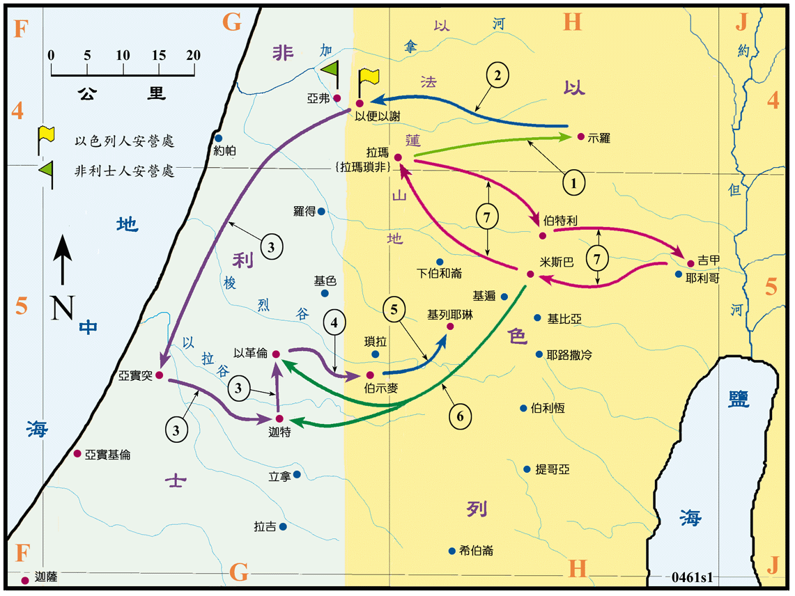

1100～1050?BC

行动线说明
| 序号 | 圣经 | 说明 |
|---|---|---|
| 1 | 撒上1:19-2:11 | 撒母耳出生 (1100BC?) 在以法莲山地的拉玛，到断奶之后即被送到示罗献给耶和华，在祭司以利面前学习事奉神。 |
| 撒上3:19-21 | 耶和华立撒母耳为先知。 | |
| 2 | 撒上4:1-4 | 以色列人与非利士人交战，以色列被非利士人打败，就把约柜从示罗运到以便以谢。 |
| 3 | 撒上4:10-11，5:1-12 | 以色列攻击非利士人，又被非利士人击败，约柜被掳，非利士人把约柜运到亚实突，又运到迦特，再运到以革伦，约柜在非利士地七个月，每到一地都会发生大灾难。 |
| 4 | 撒上6:1-16 | 非利士人惧怕约柜所降的灾，他们的五个大城各备了一份礼物赔罪，又将约柜送到伯示麦，还给以色列人。 |
| 5 | 撒上6:19-7:2 | 伯示麦人因擅观约柜，多人被杀，因此请基列耶琳的人将约柜迎去，约柜就在基列耶琳许久，直到大卫王时才被迎往耶路撒冷 (撒下 6:1)。 |
| 6 | 撒上7:5-14 | 由於撒母耳的努力，二十年后以色列人重归耶和华，他们在米斯巴聚集祈求之时，非利士人来袭，被以色列人击败，以色列人就收复了失去的土地，从以革伦直到迦特。以色列人又与亚摩利人和好(1055?)。以色列地平静了二十年。 |
| 7 | 撒上7:15-17 | 撒母耳每年巡行到伯特利、吉甲、米斯巴，随后回到拉玛。 |
在撒母耳出生之前，以色列没有王，各人任意而行，其宗教上败坏，可从祭司以利和他的两个儿子的行为看出来。以色列人积弱不振，主要的外敌是非利士人，常受到他们的骚扰。非利士人长期不断的从海上移民来到迦南，此时已占据了沿海平原大半的土地，往北到了亚弗，可见其势力已入侵到迦南的中部，而且还不断的攻打以色列人，成了以色列人的大敌。此时埃及的国势衰落，英明的兰塞三世被暗杀之后，其后的兰塞四世到十二世 (1167～1085BC)，不但在军政上都没有作为，而且渐向祭司们屈服，弱小的法老只能控制北部三角洲的地区，已无能力参加国际的事务，以色列地是暂时的脱离了埃及的控制，一直到了 930BC 以后，埃及才再度兴起。
到了撒母耳时代，以色列初被非利士人所败，以色列人在撒母耳二十年的教训之下，全体的以色列人都倾向耶和华，结果得到复兴，曾一度打败非利士人，收复失土，同时也与亚摩利人和好，国内得以平静了二十年。